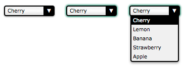

There are many cases where available HTML form widgets are just not enough. If you want to perform advanced styling on some widgets such as the <select> element or if you want to provide custom behaviors, you have no choice but to build your own widgets.
In this article, we will see how to build such a widget. To that end, we will work with an example: rebuilding the <select> element.
Note: We'll focus on building the widgets, not on how to make the code generic and reusable; that would involve some non-trival JavaScript code and DOM manipulation in an unknown context, and that is out of the scope of this article.
Design, structure, and semantics
Before building a custom widget, you should start by figuring out exactly what you want. This will save you some precious time. In particular, it's important to clearly define all the states of your widget. To do this, it's good to start with an existing widget whose states and behavior are well known, so that you can simply mimic those as much as possible.
In our example, we will rebuild the <select> element. Here is the result we want to achieve:

This screenshot shows the three main states of our widget: the normal state (on the left); the active state (in the middle) and the open state (on the right).
In terms of behavior, we want our widget to be usable with a mouse as well as with a keyboard, just like any native widget. Let's start by defining how the widget reaches each state:
- The widget is in its normal state when:
-
- the page loads
- the widget was active and the user clicks anywhere outside the widget
- the widget was active and the user moves the focus to another widget using the keyboard
Note: Moving the focus around the page is usually done through hitting the tab key, but this is not standard everywhere. For example cycling through links on a page is done in Safari by default using the Option+Tab combination.
- The widget is in its active state when:
-
- the user clicks on it
- the user hits the tab key and it gains focus
- the widget was in its open state and the user clicks on the widget.
- The widget is in its open state when:
-
- the widget is in any other state than open and the user clicks on it
Once we know how to change states, it is important to define how to change the widget's value:
- The value changes when:
-
- the user clicks on an option when the widget is in the open state
- the user hits the up or down arrow keys when the widget is in its active state
Finally, let's define how the widget's options will behave:
- When the widget is opened, the selected option is highlighted
- When the mouse is over an option, the option is highlighted and the previously highlighted option is returned to its normal state
For the purposes of our example, we'll stop with that; however, if you're a careful reader, you'll notice that some behaviors are missing. For example, what do you think will happen if the user hits the tab key while the widget is in its open state? The answer is... nothing. OK, the right behavior seems obvious but the fact is, because it's not defined in our specs, it is very easy to overlook this behavior. This is especially true in a team environment when the people who design the widget's behavior are different from the ones who implement it.
Another fun example: what will happen if the user hits the up or down arrow keys while the widget is in the open state? This one is a little bit trickier. If you consider that the active state and the open state are completely different, the answer is again "nothing will happen" because we did not define any keyboard interactions for the opened state. On the other hand, if you consider that the active state and the open state overlap a bit, the value may change but the option will definitely not be highlighted accordingly, once again because we did not define any keyboard interactions over options when the widget is in its opened state (we have only defined what should happen when the widget is opened, but nothing after that).
In our example, the missing specifications are obvious so we will handle them, but it can be a real problem on exotic new widgets, for which nobody has the slightest idea of what the right behavior is. So it's always good to spend time in this design stage, because if you define a behavior poorly, or forget to define one, it will be very hard to redefine it once the users have gotten used to it. If you have doubts, ask for the opinions of others, and if you have the budget for it, do not hesitate to perform user tests. This process is called UX Design. If you want to learn more about this topic, you should check out the following helpful resources:
Note: Also, in most systems there is a way to open the <select> element to look at all the available choices (this is the same as clicking the <select> element with a mouse). This is achieved with Alt+Down arrow under Windows and was not implemented in our example —but it would be easy to do so, as the mechanism has already been implemented for the click event.
Defining the HTML structure and semantics
Now that the widget's basic functionality has been decided upon, it's time to start building our widget. The first step is to define its HTML structure and to give it some basic semantics. Here is what we need to rebuild a <select> element:
<!-- This is our main container for our widget.
The tabindex attribute is what allows the user to focus the widget.
We'll see later that it's better to set it through JavaScript. -->
<div class="select" tabindex="0">
<!-- This container will be used to display the current value of the widget -->
<span class="value">Cherry</span>
<!-- This container will contain all the option available for our widget.
Because it's a list, it makes sense to use the ul element. -->
<ul class="optList">
<!-- Each option only contain the value to be displayed, we'll see later
how to handle the real value that will be send with the form data -->
<li class="option">Cherry</li>
<li class="option">Lemon</li>
<li class="option">Banana</li>
<li class="option">Strawberry</li>
<li class="option">Apple</li>
</ul>
</div>
Note the use of class names; these identify each relevant part regardless of the actual underlying HTML elements used. This is important to make sure that we will not bind our CSS and JavaScript to a strong HTML structure, so that we can make implementation changes later without breaking code that uses the widget. For example if you wish to implement the equivalent of the <optgroup> element.
Creating the look and feel using CSS
Now that we have a structure, we can start designing our widget. The whole point of building this custom widget is to be able to style this widget exactly as we want. To that end, we will split our CSS work into two parts: the first part will be the CSS rules absolutely necessary to have our widget behave like a <select> element, and the second part will consist of the fancy styles used to make it look the way we want.
Required styles
The required styles are those necessary to handle the three states of our widget.
.select {
/* This will create a positioning context for the list of options */
position: relative;
/* This will make our widget become part of the text flow and sizable at the same time */
display : inline-block;
}
We need an extra class active to define the look and feel of our widget when it is in its active state. Because our widget is focusable, we double this custom style with the :focus pseudo-class in order to be sure they will behave the same.
.select.active,
.select:focus {
outline: none;
/* This box-shadow property is not exactly required, however it's so important to be sure
the active state is visible that we use it as a default value, feel free to override it. */
box-shadow: 0 0 3px 1px #227755;
}
Now, let's handle the list of options:
/* The .select selector here is syntactic sugar to be sure the classes we define are
the ones inside our widget. */
.select .optList {
/* This will make sure our list of options will be displayed below the value
and out of the HTML flow */
position : absolute;
top : 100%;
left : 0;
}
We need an extra class to handle when the list of options is hidden. This is necessary in order to manage the differences between the active state and the open state that do not exactly match.
.select .optList.hidden {
/* This is a simple way to hide the list in an accessible way,
we will talk more about accessibility in the end */
max-height: 0;
visibility: hidden;
}
Beautification
So now that we have the basic functionality in place, the fun can start. The following is just an example of what is possible, and will match the screenshot at the beginning of this article. However, you should feel free to experiment and see what you can come up with.
.select {
/* All sizes will be expressed with the em value for accessibility reasons
(to make sure the widget remains resizable if the user uses the
browser's zoom in a text-only mode). The computations are made
assuming 1em == 16px which is the default value in most browsers.
If you are lost with px to em conversion, try http://riddle.pl/emcalc/ */
font-size : 0.625em; /* this (10px) is the new font size context for em value in this context */
font-family : Verdana, Arial, sans-serif;
-moz-box-sizing : border-box;
box-sizing : border-box;
/* We need extra room for the down arrow we will add */
padding : .1em 2.5em .2em .5em; /* 1px 25px 2px 5px */
width : 10em; /* 100px */
border : .2em solid #000; /* 2px */
border-radius : .4em; /* 4px */
box-shadow : 0 .1em .2em rgba(0,0,0,.45); /* 0 1px 2px */
/* The first declaration is for browsers that do not support linear gradients.
The second declaration is because WebKit based browsers haven't unprefixed it yet.
If you want to support legacy browsers, try http://www.colorzilla.com/gradient-editor/ */
background : #F0F0F0;
background : -webkit-linear-gradient(90deg, #E3E3E3, #fcfcfc 50%, #f0f0f0);
background : linear-gradient(0deg, #E3E3E3, #fcfcfc 50%, #f0f0f0);
}
.select .value {
/* Because the value can be wider than our widget, we have to make sure it will not
change the widget's width */
display : inline-block;
width : 100%;
overflow : hidden;
vertical-align: top;
/* And if the content overflows, it's better to have a nice ellipsis. */
white-space : nowrap;
text-overflow: ellipsis;
}
We don't need an extra element to design the down arrow; instead, we're using the :after pseudo-element. However, it could also be implemented using a simple background image on the select class.
.select:after {
content : "▼"; /* We use the unicode caracter U+25BC; see http://www.utf8-chartable.de */
position: absolute;
z-index : 1; /* This will be important to keep the arrow from overlapping the list of options */
top : 0;
right : 0;
-moz-box-sizing : border-box;
box-sizing : border-box;
height : 100%;
width : 2em; /* 20px */
padding-top : .1em; /* 1px */
border-left : .2em solid #000; /* 2px */
border-radius: 0 .1em .1em 0; /* 0 1px 1px 0 */
background-color : #000;
color : #FFF;
text-align : center;
}
Next, let's style the list of options:
.select .optList {
z-index : 2; /* We explicitly said the list of options will always overlap the down arrow */
/* this will reset the default style of the ul element */
list-style: none;
margin : 0;
padding: 0;
-moz-box-sizing : border-box;
box-sizing : border-box;
/* This will ensure that even if the values are smaller than the widget,
the list of options will be as large as the widget itself */
min-width : 100%;
/* In case the list is too long, its content will overflow vertically
(which will add a vertical scrollbar automatically) but never horizontally
(because we haven't set a width, the list will adjust its width automatically.
If it can't, the content will be truncated) */
max-height: 10em; /* 100px */
overflow-y: auto;
overflow-x: hidden;
border: .2em solid #000; /* 2px */
border-top-width : .1em; /* 1px */
border-radius: 0 0 .4em .4em; /* 0 0 4px 4px */
box-shadow: 0 .2em .4em rgba(0,0,0,.4); /* 0 2px 4px */
background: #f0f0f0;
}
For the options, we need to add a highlight class to be able to identify the value the user will pick (or has picked).
.select .option {
padding: .2em .3em; /* 2px 3px */
}
.select .highlight {
background: #000;
color: #FFFFFF;
}
So here's the result with our three states:
| Basic state | Active state | Open state |
|---|---|---|
| Check out the source code | ||
Bring your widget to life with JavaScript
Now that our design and structure are ready, we can write the JavaScript code to make the widget actually work.
Warning: The following code is educational and should not be used as-is. Among many things, as we'll see, it is not future-proof and it will not work on legacy browsers. It also has redundant parts that should be optimized in production code.
Note: Creating reusable widgets is something that can be a bit tricky. The W3C Web Component draft is one of the answers to this specific issue. The X-Tag project is a test implementation of this specification; we encourage you to take a look at it.
Why isn't it working?
Before we start, it's important to remember something very important about JavaScript: inside a browser, it's an unreliable technology. When you are building custom widgets, you'll have to rely on JavaScript because it's a necessary thread to tie everything together. However, there are many cases in which JavaScript isn't able to run in the browser:
- The user has turned off JavaScript: This is the most unusual case ever; very few people turn off JavaScript nowadays.
- The script is not loading. This is one of the most common cases, especially in the mobile world where the network is not very reliable.
- The script is buggy. You should always consider this possibility.
- The script is in conflict with a third party script. This can happen with tracking scripts or any bookmarklets the user uses.
- The script is in conflict with, or is affected by, a browser extension (such as Firefox's NoScript extension or Chrome's NotScripts extension).
- The user is using a legacy browser, and one of the features you require is not supported. This will happen frequently when you make use of cutting-edge APIs.
Because of these risks, it's really important to seriously consider what will happen if JavaScript isn't working. Dealing in detail with this issue is out of the scope of this article because it's closely linked to how you want to make your script generic and reusable, but we'll consider the basics of this in our example.
In our example, if our JavaScript code isn't running, we'll fall back to displaying a standard <select> element. To achieve this, we need two things.
First, we need to add a regular <select> element before each use of our custom widget. This is actually also required in order to be able to send data from our custom widget along with the rest of our form data; more about this later.
<body class="no-widget">
<form>
<select name="myFruit">
<option>Cherry</option>
<option>Lemon</option>
<option>Banana</option>
<option>Strawberry</option>
<option>Apple</option>
</select>
<div class="select">
<span class="value">Cherry</span>
<ul class="optList hidden">
<li class="option">Cherry</li>
<li class="option">Lemon</li>
<li class="option">Banana</li>
<li class="option">Strawberry</li>
<li class="option">Apple</li>
</ul>
</div>
</form>
</body>
Second, we need two new classes to let us hide the unneeded element (that is, the "real" <select> element if our script isn't running, or the custom widget if it is running). Note that by default, our HTML code hides our custom widget.
.widget select,
.no-widget .select {
/* This CSS selector basically says:
- either we have set the body class to "widget" and thus we hide the actual <select> element
- or we have not changed the body class, therefore the body class is still "no-widget",
so the elements whose class is "select" must be hidden */
position : absolute;
left : -5000em;
height : 0;
overflow : hidden;
}
Now we just need a JavaScript switch to determine if the script is running or not. This switch is very simple: if at page load time our script is running, it will remove the no-widget class and add the widget class, thereby swapping the visibility of the <select> element and of the custom widget.
window.addEventListener("load", function () {
document.body.classList.remove("no-widget");
document.body.classList.add("widget");
});
| Without JS | With JS |
|---|---|
| Check out the source code | |
Note: If you really want to make your code generic and reusable, instead of doing a class switch it's far better to just add the widget class to hide the <select> elements, and to dynamically add the DOM tree representing the custom widget after every <select> element in the page.
Making the job easier
In the code we are about to build, we will use the standard DOM API to do all the work we need. However, although DOM API support has gotten much better in browsers, there are always issues with legacy browsers (especially with good old Internet Explorer).
If you want to avoid trouble with legacy browsers, there are two ways to do so: using a dedicated framework such as jQuery, $dom, prototype, Dojo, YUI, or the like, or by polyfilling the missing feature you want to use (which can easily be done through conditional loading, with the yepnope library for example).
The features we plan to use are the following (ordered from the riskiest to the safest):
classListaddEventListenerforEach(This is not DOM but modern JavaScript)querySelectorandquerySelectorAll
Beyond the availability of those specific features, there is still one issue remaining before starting. The object returned by the querySelectorAll() function is a NodeList rather than an Array. This is important because Array objects support the forEach function, but NodeList doesn't. Because NodeList really looks like an Array and because forEach is so convenient to use, we can easily add the support of forEach to NodeList in order to make our life easier, like so:
NodeList.prototype.forEach = function (callback) {
Array.prototype.forEach.call(this, callback);
}
We weren't kidding when we said it's easy to do.
Building event callbacks
The ground is ready, we can now start to define all the functions that will be used each time the user interacts with our widget.
// This function will be used each time we want to deactivate a custom widget
// It takes one parameter
// select : the DOM node with the `select` class to deactivate
function deactivateSelect(select) {
// If the widget is not active there is nothing to do
if (!select.classList.contains('active')) return;
// We need to get the list of options for the custom widget
var optList = select.querySelector('.optList');
// We close the list of option
optList.classList.add('hidden');
// and we deactivate the custom widget itself
select.classList.remove('active');
}
// This function will be used each time the user wants to (de)activate the widget
// It takes two parameters:
// select : the DOM node with the `select` class to activate
// selectList : the list of all the DOM nodes with the `select` class
function activeSelect(select, selectList) {
// If the widget is already active there is nothing to do
if (select.classList.contains('active')) return;
// We have to turn off the active state on all custom widgets
// Because the deactivateSelect function fulfill all the requirement of the
// forEach callback function, we use it directly without using an intermediate
// anonymous function.
selectList.forEach(deactivateSelect);
// And we turn on the active state for this specific widget
select.classList.add('active');
}
// This function will be used each time the user wants to open/closed the list of options
// It takes one parameter:
// select : the DOM node with the list to toggle
function toggleOptList(select) {
// The list is kept from the widget
var optList = select.querySelector('.optList');
// We change the class of the list to show/hide it
optList.classList.toggle('hidden');
}
// This function will be used each time we need to highlight an option
// It takes two parameters:
// select : the DOM node with the `select` class containing the option to highlight
// option : the DOM node with the `option` class to highlight
function highlightOption(select, option) {
// We get the list of all option available for our custom select element
var optionList = select.querySelectorAll('.option');
// We remove the highlight from all options
optionList.forEach(function (other) {
other.classList.remove('highlight');
});
// We highlight the right option
option.classList.add('highlight');
};
That's all you need in order to handle the various states of the custom widget.
Next, we bind these functions to the appropriate events:
// We handle the event binding when the document is loaded.
window.addEventListener('load', function () {
var selectList = document.querySelectorAll('.select');
// Each custom widget needs to be initialized
selectList.forEach(function (select) {
// as well as all its `option` elements
var optionList = select.querySelectorAll('.option');
// Each time a user hovers their mouse over an option, we highlight the given option
optionList.forEach(function (option) {
option.addEventListener('mouseover', function () {
// Note: the `select` and `option` variable are closures
// available in the scope of our function call.
highlightOption(select, option);
});
});
// Each times the user click on a custom select element
select.addEventListener('click', function (event) {
// Note: the `select` variable is a closure
// available in the scope of our function call.
// We toggle the visibility of the list of options
toggleOptList(select);
});
// In case the widget gain focus
// The widget gains the focus each time the user clicks on it or each time
// they use the tabulation key to access the widget
select.addEventListener('focus', function (event) {
// Note: the `select` and `selectList` variable are closures
// available in the scope of our function call.
// We activate the widget
activeSelect(select, selectList);
});
// In case the widget loose focus
select.addEventListener('blur', function (event) {
// Note: the `select` variable is a closure
// available in the scope of our function call.
// We deactivate the widget
deactivateSelect(select);
});
});
});
At that point, our widget will change state according to our design, but its value doesn't get updated yet. We'll handle that next.
| Live example |
|---|
| Check out the source code |
Handling the widget's value
Now that our widget is working, we have to add code to update its value according to user input and make it possible to send the value along with form data.
The easiest way to do this is to use a native widget under the hood. Such a widget will keep track of the value with all the built-in controls provided by the browser, and the value will be sent as usual when a form is submitted. There's no point in reinventing the wheel when we can have all this done for us.
As seen previously, we already use a native select widget as a fallback for accessibility reasons; we can simply synchronize its value with that of our custom widget:
// This function updates the displayed value and synchronizes it with the native widget.
// It takes two parameters:
// select : the DOM node with the class `select` containing the value to update
// index : the index of the value to be selected
function updateValue(select, index) {
// We need to get the native widget for the given custom widget
// In our example, that native widget is a sibling of the custom widget
var nativeWidget = select.previousElementSibling;
// We also need to get the value placeholder of our custom widget
var value = select.querySelector('.value');
// And we need the whole list of options
var optionList = select.querySelectorAll('.option');
// We set the selected index to the index of our choice
nativeWidget.selectedIndex = index;
// We update the value placeholder accordingly
value.innerHTML = optionList[index].innerHTML;
// And we highlight the corresponding option of our custom widget
highlightOption(select, optionList[index]);
};
// This function returns the current selected index in the native widget
// It takes one parameter:
// select : the DOM node with the class `select` related to the native widget
function getIndex(select) {
// We need to access the native widget for the given custom widget
// In our example, that native widget is a sibling of the custom widget
var nativeWidget = select.previousElementSibling;
return nativeWidget.selectedIndex;
};
With these two functions, we can bind the native widgets to the custom ones:
// We handle event binding when the document is loaded.
window.addEventListener('load', function () {
var selectList = document.querySelectorAll('.select');
// Each custom widget needs to be initialized
selectList.forEach(function (select) {
var optionList = select.querySelectorAll('.option'),
selectedIndex = getIndex(select);
// We make our custom widget focusable
select.tabIndex = 0;
// We make the native widget no longer focusable
select.previousElementSibling.tabIndex = -1;
// We make sure that the default selected value is correctly displayed
updateValue(select, selectedIndex);
// Each time a user click on an option, we update the value accordingly
optionList.forEach(function (option, index) {
option.addEventListener('click', function (event) {
updateValue(select, index);
});
});
// Each time a user us its keyboard on a focused widget, we update the value accordingly
select.addEventListener('keyup', function (event) {
var length = optionList.length,
index = getIndex(select);
// When the user hit the down arrow, we jump to the next option
if (event.keyCode === 40 && index < length - 1) { index++; }
// When the user hit the up arrow, we jump to the previous option
if (event.keyCode === 38 && index > 0) { index--; }
updateValue(select, index);
});
});
});
In the code above, it's worth noting the use of the tabIndex property. Using this property is necessary to ensure that the native widget will never gain focus, and to make sure that our custom widget gains focus when the user uses his keyboard or his mouse.
With that, we're done! Here's the result:
| Live example |
|---|
| Check out the source code |
But wait a second, are we really done?
Make it accessible
We have built something that works and though we're far from a fully-featured select box, it works nicely. But what we've done is nothing more than fiddle with the DOM. It has no real semantics, and even though it looks like a select box, from the browser's point of view it isn't one, so assistive technologies won't be able to understand it's a select box. In short, this pretty new select box isn't accessible!
Fortunately, there is a solution and it's called ARIA. ARIA stands for "Accessible Rich Internet Application", and it's a W3C specification specifically designed for what we are doing here: making web applications and custom widgets accessible. It's basically a set of attributes that extend HTML so that we can better describe roles, states and properties as though the element we've just devised was the native element it tries to pass for. Using these attributes is dead simple, so let's do it.
The role attribute
The key attribute used by ARIA is the role attribute. The role attribute accepts a value that defines what an element is used for. Each role defines its own requirements and behaviors. In our example, we will use the listbox role. It's a "composite role", which means elements with that role expect to have children, each with a specific role (in this case, at least one child with the option role).
It's also worth noting that ARIA defines roles that are applied by default to standard HTML markup. For example, the <table> element matches the role grid, and the <ul> element matches the role list. Because we use a <ul> element, we want to make sure the listbox role of our widget will supersede the list role of the <ul> element. To that end, we will use the role presentation. This role is designed to let us indicate that an element has no special meaning, and is used solely to present information. We will apply it to our <ul> element.
To support the listbox role, we just have to update our HTML like this:
<!-- We add the role="listbox" attribute to our top element -->
<div class="select" role="listbox">
<span class="value">Cherry</span>
<!-- We also add the role="presentation" to the ul element -->
<ul class="optList" role="presentation">
<!-- And we add the role="option" attribute to all the li elements -->
<li role="option" class="option">Cherry</li>
<li role="option" class="option">Lemon</li>
<li role="option" class="option">Banana</li>
<li role="option" class="option">Strawberry</li>
<li role="option" class="option">Apple</li>
</ul>
</div>
Note: Including both the role attribute and a class attribute is only necessary if you want to support legacy browsers that do not support the CSS attribute selectors.
The aria-selected attribute
Using the role attribute is not enough. ARIA also provides many states and property attributes. The more and better you use them, the better your widget will be understood by assistive technologies. In our case, we will limit our usage to one attribute: aria-selected.
The aria-selected attribute is used to mark which option is currently selected; this lets assistive technologies inform the user what the current selection is. We will use it dynamically with JavaScript to mark the selected option each time the user chooses one. To that end, we need to revise our updateValue() function:
function updateValue(select, index) {
var nativeWidget = select.previousElementSibling;
var value = select.querySelector('.value');
var optionList = select.querySelectorAll('.option');
// We make sure that all the options are not selected
optionList.forEach(function (other) {
other.setAttribute('aria-selected', 'false');
});
// We make sure the chosen option is selected
optionList[index].setAttribute('aria-selected', 'true');
nativeWidget.selectedIndex = index;
value.innerHTML = optionList[index].innerHTML;
highlightOption(select, optionList[index]);
};
Here is the final result of all these changes (you'll get a better feel for this by trying it with an assistive technology such as NVDA or VoiceOver):
| Live example |
|---|
| Check out the final source code |
Conclusion
We have seen all the basics of building a custom form widget, but as you can see it's not trivial to do, and often it's better and easier to rely on third-party libraries instead of coding them from scratch yourself (unless, of course, your goal is to build such a library).
Here are a few libraries you should consider before coding your own:
If you want to move forward, the code in this example needs some improvement before it becomes generic and reusable. This is an exercise you can try to perform. Two hints to help you in this: the first argument for all our functions is the same, which means those functions need the same context. Building an object to share that context would be wise. Also, you need to make it feature-proof; that is, it needs to be able to work better with a variety of browsers whose compatibility with the Web standards they use vary. Have fun!